Путешествия по Байкалу
Туры по самому красивому месту России. Поехали с нами за новыми впечатлениями!
подобрать турКатегории туров

Основные направления деятельности
Групповые и индивидуальные туры по Байкалу для российских и иностранных туристов
Экскурсии по городу Улан-Удэ, Республике Бурятия, городу Иркутск
Услуги гидов-переводчиков на любом иностранном языке
Круизы и прогулки по Байкалу на теплоходах и катерах
Профессиональная организация охоты и рыбалки на Байкале
Аренда автотранспорта для экскурсий и пассажирских перевозок
Бронирование гостиниц в городе Улан-Удэ и на Байкале
Организация индивидуальных туров и VIP-туров на Байкале
Популярные предложения
-
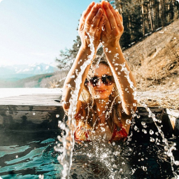
Зимний однодневный тур на Чивыркуйский залив
Cтоимость 4000 руб.
-
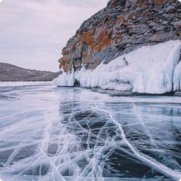
Зимний однодневный тур на остров Ольхон
Cтоимость 5000 руб.
-
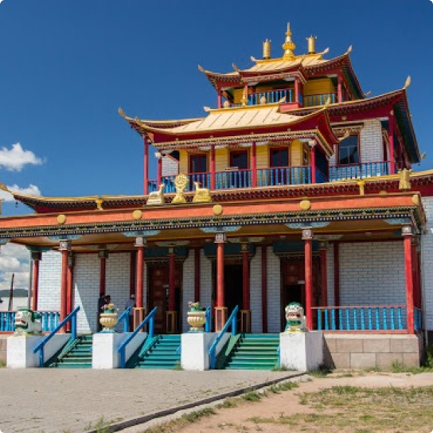
Экскурсия в Иволгинский дацан
Продолжительность 4 часа Cтоимость от 500 руб.
-
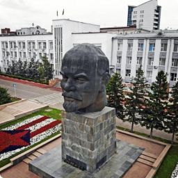
Обзорная экскурсия по Улан-Удэ
Продолжительность 3 часа Cтоимость от 500 руб.
-
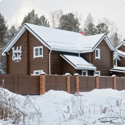
Эко-отель «Байкальское шале», с. Максимиха
Стоимость от 6500 руб.
-
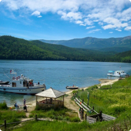
Летний однодневный тур в Чивыркуйский залив
Cтоимость 4000 руб.
-
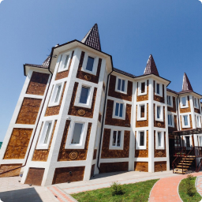
Отель «Белая Карета», с. Горячинск
Cтоимость от 3200 руб.
-
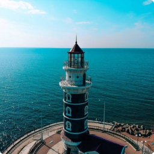
Однодневная поездка на Байкал «Байкальская Гавань»
Стоимость от 1000 руб.
-
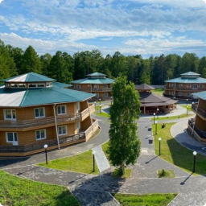
Парк-отель «Сагаан-Морин», с. Сухая
Стоимость от 3500 руб.
-
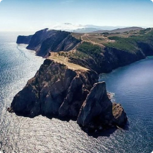
Летний однодневный тур на остров Ольхон
Стоимость от 8500 руб.
-
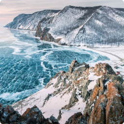
Парк-отель «Байкальская Ривьера», с. Гремячинск
Стоимость от 3700 руб.
-
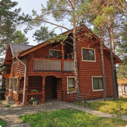
Зимний тур «Чивыркуйская сказка»
Стоимость от 2000 руб.
- 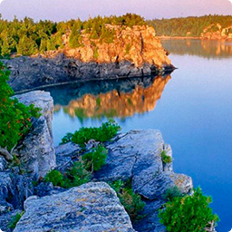 Показать все предложения
Карта Байкала
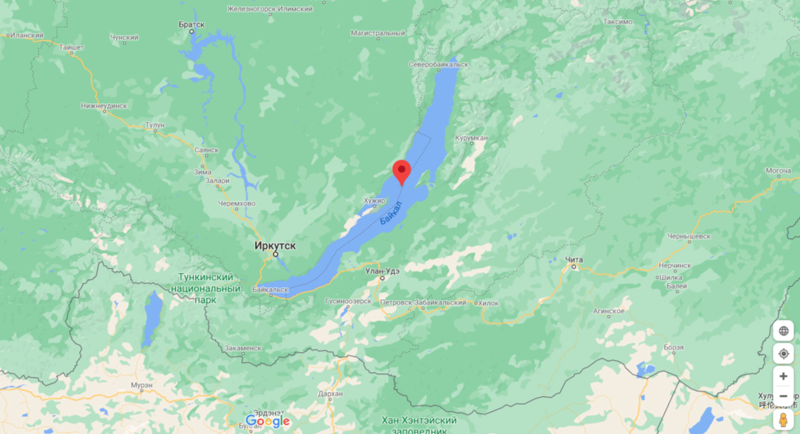О Байкале
Озеро Байкал – глубочайшее и древнейшее озеро планеты. Древние жители Прибайкалья называли его Священным морем и считали, что в Байкале нет дна, обожествляли и наделяли его мистическими свойствами. Именно здесь пронзительные чувства и скрытые способности человека находят выплеск.
Познается что-то новое не только в природе, но и в самом себе. Многие посетившие Байкал люди утверждают, что озеро оказало большое влияние на их дальнейшую жизнь.
Читать подробнейФотогалерея
Перейти в раздел- 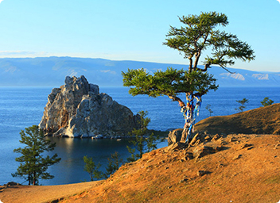
- 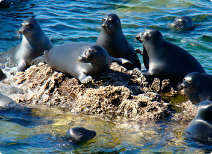
- 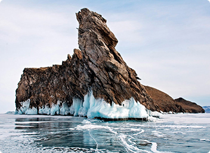
- 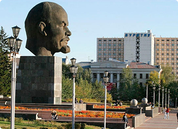
- 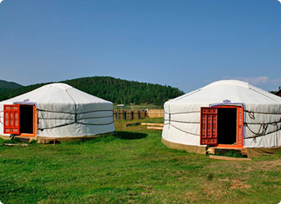
- 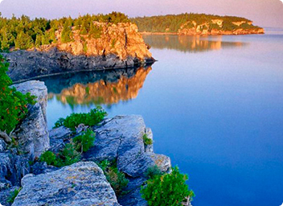
Преимущества отдыха с нами
Байкальский отдых с нами – это легко! 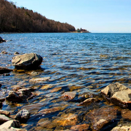 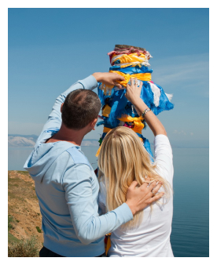На сайте туристического агентства «Байкальский отдых» вы найдете всю необходимую информацию о туристических базах отдыха на озере Байкал. Любите ли вы отличный сервис и европейский комфорт или предпочитаете прочувствовать все трудности дикого туризма и окунуться в атмосферу байкальской природы, здесь вы сможете найти турбазу по своему вкусу.
Туристические базы отдыха на Байкале предоставляют разнообразные условия размещения, они отличаются по перечню предлагаемых услуг и уровню комфорта.
Есть большие турбазы с полностью организованным питанием и вечерними дискотеками, есть также небольшие малолюдные базы всего с несколькими коттеджами. Можно арендовать отдельный гостевой домик с кухней и готовить пищу самостоятельно.
Среди этого многообразия обязательно найдется подходящая, именно вам, база отдыха. Тем не менее, Байкал, до сих пор, обладает всеми оттенками дикого экотуризма, чем и привлекает, уставших от городской суеты, туристов.
Если вы предпочитаете зимний байкальский отдых, к Вашим услугам круглогодичные отапливаемые турбазы и различные зимние развлечения. Байкал зимой поражает кристальной чистотой и прозрачностью льда.
Туристы очень любят отмечать Новогодние праздники и Рождество на турбазах Байкала, так как новый год на Байкале отличается особым волшебством. Развлекательную новогоднюю программу готовит почти каждая турбаза.
Наши достижения
-
7 лет успешной работы
-
250+ отелей на Байкале
-
100+ различных туров
-
32 000 кв. км – площадь на которой мы организовываем путешествия
-
50 000 довольных туристов от 3 до 85 лет